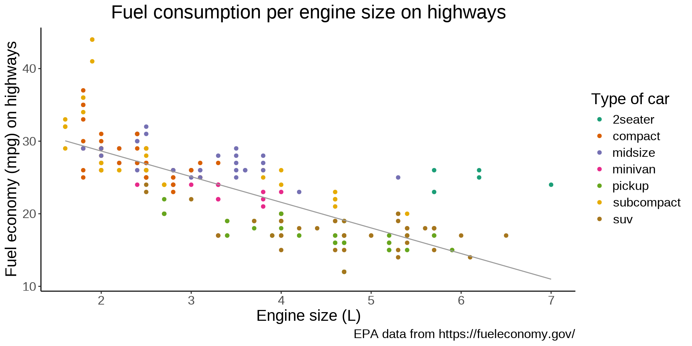

Fields with heavy statistics, modelling, or Bayesian analysis such as biology, linguistics, economics, or statistics
Data science using a lot of tabular data
Downsides
Inconsistent syntax full of quirks
Slow
Large memory usage
Statistics & modelling
Data visualization
Datasets
R comes with a number of datasets. You can get a list by running data(). The ggplot2 package provides additional ones. We will use the mpg dataset from ggplot2:
library(ggplot2)head(mpg)
# A tibble: 6 × 11
manufacturer model displ year cyl trans drv cty hwy fl
<chr> <chr> <dbl> <int> <int> <chr> <chr> <int> <int> <chr>
1 audi a4 1.8 1999 4 auto(l5) f 18 29 p
2 audi a4 1.8 1999 4 manual(m5) f 21 29 p
3 audi a4 2 2008 4 manual(m6) f 20 31 p
4 audi a4 2 2008 4 auto(av) f 21 30 p
5 audi a4 2.8 1999 6 auto(l5) f 16 26 p
6 audi a4 2.8 1999 6 manual(m5) f 18 26 p
class
<chr>
1 compact
2 compact
3 compact
4 compact
5 compact
6 compact
The canvas
The first component is the data:
ggplot(data = mpg)
The canvas
The second component sets the way variables are mapped on the axes. This is done with the aes() (aesthetics) function:
ggplot(data = mpg, mapping =aes(x = displ, y = hwy))
Geometric representations of the data
Onto this canvas, we can add “geoms” (geometrical objects) representing the data.
To represent the data as a scatterplot, we use the geom_point() function:
ggplot(mpg, aes(x = displ, y = hwy)) +geom_point()
Colour-coding based on variables
We can colour-code the points in the scatterplot based on the drv variable, showing the lower fuel efficiency of 4WD vehicles:
ggplot(mpg, aes(x = displ, y = hwy)) +geom_point(aes(color = drv))
Colour-coding based on variables
Or we can colour-code them based on the class variable:
ggplot(mpg, aes(x = displ, y = hwy)) +geom_point(aes(color = class))
Multiple geoms
Multiple “geoms” can be added on top of each other. For instance, we can add a smoothed conditional means function that aids at seeing patterns in the data with geom_smooth():
The default smoothing function uses the LOESS (locally estimated scatterplot smoothing) method. We can change the method by passing it as an argument to geom_smooth():
We can apply the smoothing function to each class instead of the entire data. It creates a busy plot but shows that the downward trend remains true within each type of car:
ggplot(mpg, aes(x = displ, y = hwy, color = class)) +geom_point(aes(color = class)) +geom_smooth(method = lm)
ggplot(mpg, aes(x = displ, y = hwy)) +geom_point(aes(color = class)) +scale_color_brewer(palette ="Dark2") +geom_smooth(method = lm,se =FALSE,color ="#999999",linewidth =0.5 ) +labs(title ="Fuel consumption per engine size on highways",x ="Engine size (L)",y ="Fuel economy (mpg) on highways",color ="Type of car",caption ="EPA data from https://fueleconomy.gov/" )
ggplot(mpg, aes(x = displ, y = hwy)) +geom_point(aes(color = class)) +scale_color_brewer(palette ="Dark2") +geom_smooth(method = lm,se =FALSE,color ="#999999",linewidth =0.5 ) +labs(title ="Fuel consumption per engine size on highways",x ="Engine size (L)",y ="Fuel economy (mpg) on highways",color ="Type of car",caption ="EPA data from https://fueleconomy.gov/" ) +theme_classic()
The theme() function allows to tweak the theme in any number of ways. For instance, what if we don’t like the default position of the title and we’d rather have it centered?
ggplot(mpg, aes(x = displ, y = hwy)) +geom_point(aes(color = class)) +scale_color_brewer(palette ="Dark2") +geom_smooth(method = lm,se =FALSE,color ="#999999",linewidth =0.5 ) +labs(title ="Fuel consumption per engine size on highways",x ="Engine size (L)",y ="Fuel economy (mpg) on highways",color ="Type of car",caption ="EPA data from https://fueleconomy.gov/" ) +theme_classic() +theme(plot.title =element_text(hjust =0.5))
Many things can be changed thanks to the theme() function. For instance, we can move the legend to give more space to the actual graph:
ggplot(mpg, aes(x = displ, y = hwy)) +geom_point(aes(color = class)) +scale_color_brewer(palette ="Dark2") +geom_smooth(method = lm,se =FALSE,color ="#999999",linewidth =0.5 ) +labs(title ="Fuel consumption per engine size on highways",x ="Engine size (L)",y ="Fuel economy (mpg) on highways",color ="Type of car",caption ="EPA data from https://fueleconomy.gov/" ) +theme_classic() +theme(plot.title =element_text(hjust =0.5), legend.position ="bottom")

Combining plots
For instance the patchwork package allows to easily combine multiple plots on the same frame.
Let’s add a second plot next to our plot. To add plots side by side, we simply add them to each other. We also make a few changes to the labels to improve the plots integration:
library(patchwork)ggplot(mpg, aes(x = displ, y = hwy)) +# First plotgeom_point(aes(color = class)) +scale_color_brewer(palette ="Dark2") +geom_smooth(method = lm,se =FALSE,color ="#999999",linewidth =0.5 ) +labs(x ="Engine size (L)",y ="Fuel economy (mpg) on highways",color ="Type of car" ) +theme_classic() +theme(plot.title =element_text(hjust =0.5),legend.position =c(0.7, 0.75), # Better legend positionlegend.background =element_rect( # Add a frame to the legendlinewidth =0.1,linetype ="solid",colour ="black" ) ) +ggplot(mpg, aes(x = displ, y = hwy)) +# Second plotgeom_point(aes(color = drv)) +scale_color_brewer(palette ="Dark2") +labs(x ="Engine size (L)",y =element_blank(), # Remove redundant labelcolor ="Type of drive train",caption ="EPA data from https://fueleconomy.gov/" ) +theme_classic() +theme(plot.title =element_text(hjust =0.5),legend.position =c(0.7, 0.87),legend.background =element_rect(linewidth =0.1,linetype ="solid",colour ="black" ) )
library(sf) # spatial vector data manipulationlibrary(tmap) # map production & tiled web maplibrary(dplyr) # non GIS specific (tabular data manipulation)library(magrittr) # non GIS specific (pipes)library(purrr) # non GIS specific (functional programming)library(rnaturalearth) # basemap data access functionslibrary(rnaturalearthdata) # basemap datalibrary(ggmap) # download basemap datalibrary(magick) # wrapper around ImageMagick STL
Randolph Glacier Inventory dataset
ak <-st_read("data/01_rgi60_Alaska")
Reading layer `01_rgi60_Alaska' from data source `./data/01_rgi60_Alaska'
using driver `ESRI Shapefile'
Simple feature collection with 27108 features and 22 fields
Geometry type: POLYGON
Dimension: XY
Bounding box: xmin: -176.1425 ymin: 52.05727 xmax: -126.8545 ymax: 69.35167
Geodetic CRS: WGS 84
Structure of the data
str(ak)
Classes ‘sf’ and 'data.frame': 27108 obs. of 23 variables:
$ RGIId : chr "RGI60-01.00001" "RGI60-01.00002" "RGI60-01.00003" ...
$ GLIMSId : chr "G213177E63689N" "G213332E63404N" "G213920E63376N" ...
$ BgnDate : chr "20090703" "20090703" "20090703" "20090703" ...
$ EndDate : chr "-9999999" "-9999999" "-9999999" "-9999999" ...
$ CenLon : num -147 -147 -146 -146 -147 ...
$ CenLat : num 63.7 63.4 63.4 63.4 63.6 ...
$ O1Region: chr "1" "1" "1" "1" ...
$ O2Region: chr "2" "2" "2" "2" ...
$ Area : num 0.36 0.558 1.685 3.681 2.573 ...
$ Zmin : int 1936 1713 1609 1273 1494 1201 1918 2826 1750 1280 ...
$ Zmax : int 2725 2144 2182 2317 2317 3547 2811 3555 2514 1998 ...
$ Zmed : int 2385 2005 1868 1944 1914 1740 2194 3195 1977 1666 ...
$ Slope : num 42 16 18 19 16 22 23 45 18 17 ...
$ Aspect : int 346 162 175 195 181 33 151 80 274 35 ...
$ Lmax : int 839 1197 2106 4175 2981 10518 1818 613 2255 3332 ...
$ Status : int 0 0 0 0 0 0 0 0 0 0 ...
$ Connect : int 0 0 0 0 0 0 0 0 0 0 ...
$ Form : int 0 0 0 0 0 0 0 0 0 0 ...
$ TermType: int 0 0 0 0 0 0 0 0 0 0 ...
$ Surging : int 9 9 9 9 9 9 9 9 9 9 ...
$ Linkages: int 9 9 9 9 9 9 9 9 9 9 ...
$ Name : chr NA NA NA NA ...
$ geometry:sfc_POLYGON of length 27108; first list element: List of 1
..$ : num [1:65, 1:2] -147 -147 -147 -147 -147 ...
..- attr(*, "class")= chr [1:3] "XY" "POLYGON" "sfg"
- attr(*, "sf_column")= chr "geometry"
- attr(*, "agr")= Factor w/ 3 levels "constant","aggregate",..: NA NA NA ...
..- attr(*, "names")= chr [1:22] "RGIId" "GLIMSId" "BgnDate" "EndDate" ...
Glacier National Park dataset
Create a function that reads and cleans the data:
prep <-function(dir) { g <-st_read(dir) g %<>%rename_with(~tolower(gsub("Area....", "area", .x))) g %<>% dplyr::select( year, objectid, glacname, area, shape_leng, x_coord, y_coord, source_sca, source )}
Create a vector of dataset names:
dirs <-grep("data/GNPglaciers_.*", list.dirs(), value = T)
Pass each element of that vector through prep() thanks to map():